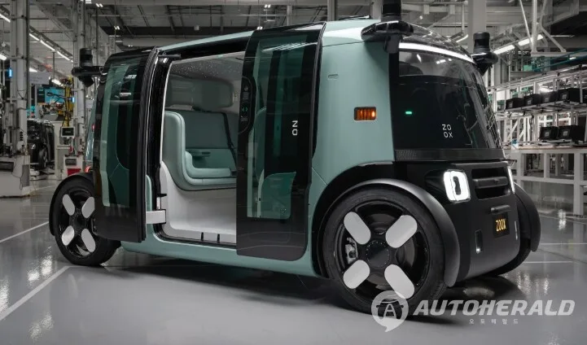

▲ 샌프란시스코의 웨이모 차량. 자율주행 시험 주행에는 아직 사람이 탑승한다
자율주행차가 안전한지 묻는 질문은 대체로 하나로 좁혀집니다. "사고를 냈느냐"입니다.
그런데 사고를 내지 않고도 사람이 다치는 경로가 있습니다. 테크크런치가 미국 산업안전보건청(OSHA) 제출 자료를 분석한 결과, 2024~2025년 웨이모와 죽스의 시험 운전자에게서 24건이 넘는 업무상 부상이 확인됐습니다. 원인은 충돌이 아니라 자율주행 시스템의 급제동과 급회피였습니다.
1. 충돌하지 않고 다치는 방식
편타성 손상은 추돌 사고의 대표적 부상입니다. 차가 급격히 멈추거나 밀릴 때 머리가 채찍처럼 앞뒤로 꺾이면서 목에 손상이 생깁니다. 그런데 이번 사례에서 부상자들은 부딪히지 않았습니다.

▲ 죽스의 로보택시. 운전대가 없는 구조로 설계됐다 ⓒ 오토헤럴드
자율주행 시스템이 위험을 감지하고 급하게 제동을 걸면, 그 감속도 자체가 탑승자에게 전달됩니다. 사람이 운전할 때는 자기가 브레이크를 밟기 때문에 몸이 미리 대비합니다. 시스템이 밟으면 그 예고가 없습니다.

▲ 자율주행 차량 실내. 시험 단계에서는 운전석에 사람이 앉는다 ⓒ 오토헤럴드
급회피도 같은 원리입니다. 시스템이 장애물을 피하려고 조향을 급격히 넣으면 횡가속도가 발생하고, 탑승자의 몸은 옆으로 밀립니다. 이 역시 예고 없이 일어납니다.
2. "사고를 피했다"는 기록의 이면
여기에 역설이 있습니다. 자율주행 시스템이 급제동을 걸어 충돌을 피했다면, 통계상으로는 사고가 없었던 것으로 기록됩니다. 안전 실적으로는 성공입니다.
그런데 그 순간에 사람이 다쳤다면 그 부상은 어디에 기록될까요. 교통사고 통계가 아니라 산업재해로 기록됩니다. 두 통계는 서로 연결되지 않습니다.

▲ 샌프란시스코에서 운행 중인 죽스 차량 ⓒ 오토헤럴드
📍 충돌 회피와 체감 안전은 다르다
이 사례가 드러내는 것은 자율주행 기술이 충돌을 피하는 것과, 탑승자가 느끼는 안전성이 같지 않다는 점입니다. 시스템은 "부딪히지 않는 것"을 최우선으로 최적화돼 있고, 그 목표를 달성하는 과정에서 감속도와 횡가속도가 사람이 견디기 어려운 수준까지 올라갈 수 있습니다.
사람이 운전할 때는 이 문제가 덜 드러납니다. 운전자가 자기 몸의 한계를 알기 때문에 그 범위 안에서 조작하기 때문입니다. 시스템에는 그런 자기 제한이 기본값으로 들어 있지 않습니다.
3. 24건을 뜯어보면
기업별로 나누면 구조가 보입니다. 웨이모 시험 운전자를 고용·관리하는 트랜스데브가 샌프란시스코·로스앤젤레스·피닉스 3개 도시 차고지에서 16건을 보고했고, 죽스는 급제동과 관련해 최대 8건을 보고했습니다.

▲ 웨이모는 샌프란시스코·로스앤젤레스·피닉스에서 시험 주행을 이어 왔다 ⓒ 오토헤럴드
| 시기 | 건수 | 원인 |
|---|---|---|
| 2024년 | 5건 | 급제동 1건 · 불규칙 거동 4건 |
| 2025년 | 11건 | 거의 전부 급제동 관련 |
2024년에서 2025년으로 넘어오며 건수가 두 배 이상 늘었습니다. 그리고 원인이 급제동으로 수렴했습니다. 초기의 불규칙한 거동 문제는 줄었지만, 급제동은 오히려 늘어난 셈입니다.
규모 확대와 함께 움직인 숫자이기도 합니다. 웨이모 차량은 2025년 5월 1,500대 미만에서 3,500대 이상으로 늘었습니다. 시험 주행이 늘면 부상도 비례해 늘어나는 구조입니다.
4. 실제 사례가 보여주는 것
개별 기록을 보면 이 문제의 성격이 분명해집니다.

▲ 시험 주행 확대와 함께 부상 보고도 늘었다 ⓒ 오토헤럴드
| 시기 · 장소 | 상황 | 결과 |
|---|---|---|
| 2025년 · 로스앤젤레스 | 아이들이 진로에 들어와 급정거 | 175일 업무 불가 |
| 2024년 9월 · 피닉스 | 장애물이 없는데도 급제동 | 157일 업무 불가 |
| 2025년 1월 5일 · 샌프란시스코 | 죽스 차량 급제동 — 어깨·상완 부상 | 16일 제한 근무 |
| 웨이모 사례 | 손목 골절 | 60일 이상 휴업 |
| 죽스 전반 | 급제동 관련 | 회복 4~46일 |
로스앤젤레스 사례가 이 사안의 핵심을 담고 있습니다. 아이들이 차량 진로에 들어왔고, 시스템은 급정거로 대응했습니다. 보행자 관점에서는 완벽한 작동이었습니다. 그 대가로 안에 있던 사람이 175일을 쉬었습니다.
피닉스 사례는 반대 성격입니다. 장애물이 없었는데도 차가 급제동을 걸었습니다. 이른바 유령 제동(phantom braking)에 해당하는 상황이고, 이 경우에는 피할 사고 자체가 없었습니다.
5. 다친 사람은 누구의 직원인가
책임 구조에서 걸리는 지점이 있습니다. 웨이모의 시험 운전자는 웨이모 직원이 아닙니다. 이들을 고용하고 관리하는 곳은 협력사 트랜스데브입니다.

▲ 죽스 차량. 부상 보고 주체와 실제 소프트웨어 개발사가 다른 구조다 ⓒ 오토헤럴드
그래서 OSHA 기록도 트랜스데브 이름으로 남습니다. 자율주행 소프트웨어가 만든 부상인데 산업재해 통계상 사용자는 다른 회사가 되는 구조입니다.
양사의 입장은 이렇습니다. 웨이모는 "탑승자와 도로 이용자, 팀의 안전이 가장 중요하다"는 원칙을 밝히면서도 개별 부상에 대한 질의에는 답하지 않았습니다. 죽스는 급제동이 때때로 불가피하다고 인정하면서, 보고된 부상은 수백만 마일의 시험 주행에 비하면 극히 일부라고 설명했습니다.
6. 24건도 전부가 아니다
이 숫자는 확인된 값이지 전체가 아닙니다. OSHA 공개 의무는 택시·대중교통처럼 고위험으로 분류된 업종에서 직원 100명 이상인 기업에만 적용됩니다.
새로 진입한 시장에서는 아직 보고되지 않은 부상이 있을 수 있습니다. 인력 규모가 기준에 못 미치는 신규 거점이라면 애초에 집계에 잡히지 않습니다.
| 구분 | 기존 교통사고 통계 | 이번 사례 |
|---|---|---|
| 기록 주체 | 경찰 · 도로교통 당국 | 산업안전 당국(OSHA) |
| 집계 조건 | 충돌 발생 | 충돌 없이도 부상 |
| 피해자 | 탑승자 · 보행자 | 시험 운전자(근로자) |
| 사용자 | 해당 없음 | 협력사(트랜스데브 등) |
| 시스템 평가 | 사고 회피 = 성공 | 회피 과정에서 부상 발생 |
7. 상용화 단계에서 무엇이 달라지나
시험 운전자는 직업적으로 그 자리에 앉아 있는 사람입니다. 하루에 수 시간, 반복적으로 자율주행 상태의 차에 탑승합니다. 일반 승객보다 노출 시간이 압도적으로 깁니다.

▲ 시험 차량에는 상시 탑승 인력이 배치된다 ⓒ 오토헤럴드
그래서 이들에게 먼저 나타난 것입니다. 같은 현상이 일반 승객에게 나타나지 않는다는 뜻이 아니라, 노출량이 적어 개별 사례로 흩어질 뿐입니다. 로보택시 이용이 늘어나면 이 문제는 승객 쪽으로도 넘어옵니다.
특히 취약한 층이 있습니다. 고령자, 목·허리 질환이 있는 사람, 어린이는 같은 감속도에서도 손상 위험이 큽니다. 운전자가 없는 차량에서는 "지금 급하게 설 수 있다"는 사전 경고를 줄 사람도 없습니다.
8. 무엇을 봐야 하나
자율주행 성능 지표에 빠져 있는 항목이 하나 드러났습니다. 지금까지 공개되는 수치는 대체로 주행 거리당 개입 횟수, 충돌 건수, 규정 위반 건수입니다. 감속도와 횡가속도의 분포는 거의 공개되지 않습니다.
▲ 로보택시 호출 앱. 승객은 주행 특성을 미리 알 수 없다 ⓒ 오토헤럴드
탑승자 입장에서는 이쪽이 더 체감되는 지표입니다. 사고가 나지 않는 것은 기본값이고, 그다음은 "어떻게 멈추느냐"이기 때문입니다.
국내에도 로보택시 운행이 확대되고 있습니다. 도입 논의가 사고율 중심으로만 흐르면, 이번에 미국에서 드러난 유형의 문제는 통계 밖에 남습니다. 시험 인력의 산업재해 기록을 어떻게 관리할 것인지가 함께 정리돼야 합니다.
정리하면 이렇습니다. 로보택시는 사고를 줄이는 방향으로 작동하고 있습니다. 다만 사고를 피하는 방식 자체가 사람을 다치게 할 수 있다는 점이 실제 기록으로 확인됐습니다. 안전 지표에 이 항목이 추가되지 않으면, 24건이라는 숫자는 계속 통계 바깥에 있게 됩니다.